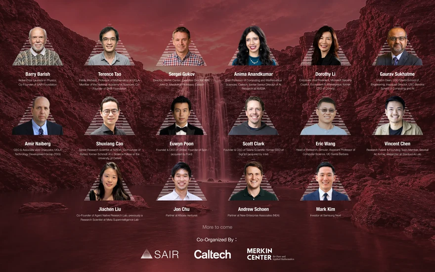
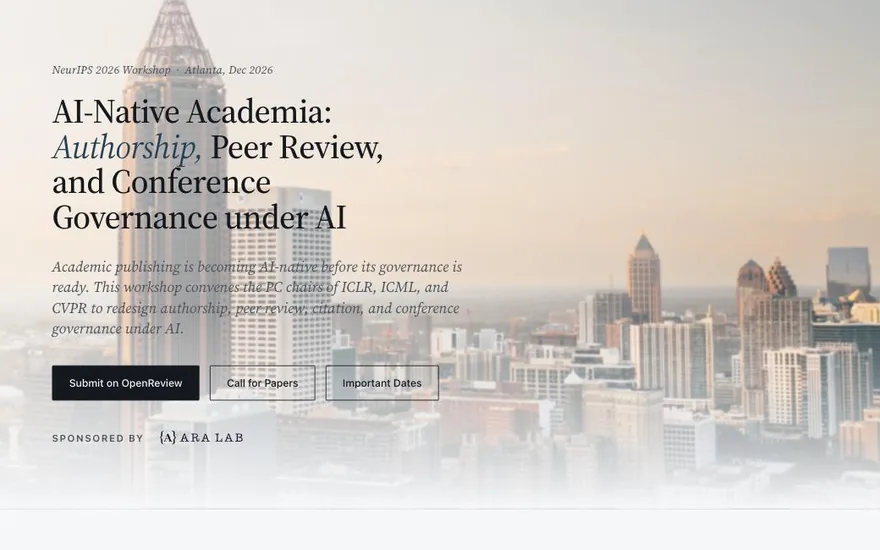
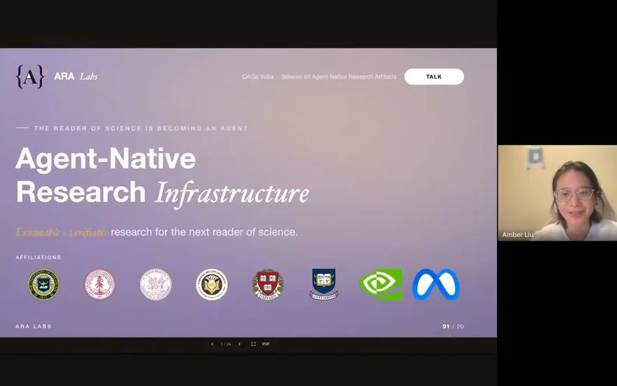
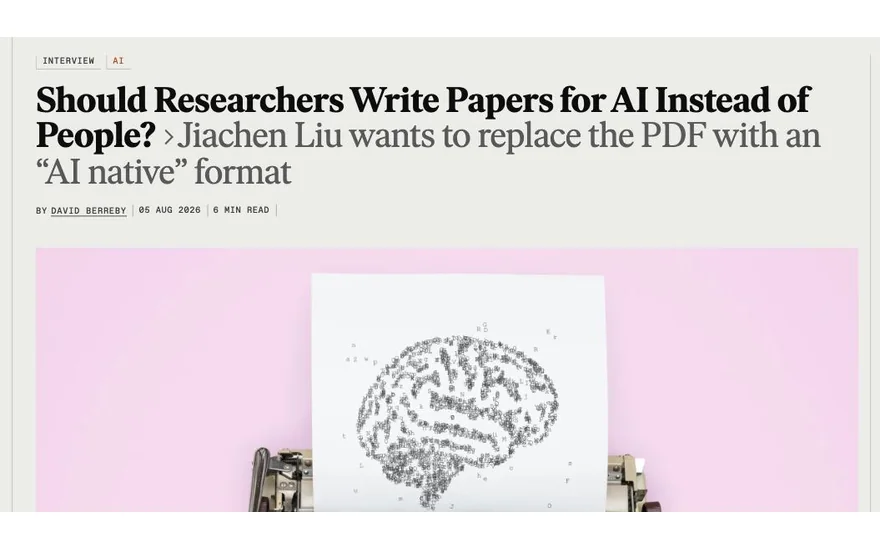

About Me
I'm building recursive self-improvement infrastructures — systems that get stronger the more they're used.
Before that, I got my PhD in Computer Science from University of Michigan (UMich), advised by Prof. Mosharaf Chowdhury. My research focused on building efficient systems that enable researchers to push the boundary of machine learning, including LLM serving systems, LLM pre-training systems (Meta Llama&Avocado), and Agentic RL. To contribute to the research community, I maintain comprehensive paper collections on Private ML Systems and LLM Systems.
I'm always eager to engage in meaningful discussions about research and explore potential academic collaborations. Feel free to reach out via email or schedule a meeting to connect!
What is AI for Science, an AI Co-Scientist, and AI-Native Research Infrastructure?
I'm building AI co-scientists for computational research. I co-lead Curie, the first AI-agent framework for rigorous automated scientific experimentation, and co-created EXP-Bench (ICLR 2026), the benchmark measuring whether agents can conduct AI research experiments end-to-end.
On the broader AI-native research ecosystem, I argue that the academic paper itself must evolve for an agent-driven world. In The Last Human-Written Paper: Agent-Native Research Artifacts, I propose ARA — a machine-executable research package that replaces narrative papers with structured layers (scientific logic, executable code, exploration graph, raw evidence), eliminating the storytelling and engineering taxes that block AI from reproducing and extending science.
Underneath, I build the systems layer that lets this ecosystem run at scale. My PhD thesis is on LLM infrastructure, spanning my expertise across LLM serving, pre-training, and post-training systems, and I was named a Machine Learning and Systems Rising Star (Class of 2023). Through intern, part-time, and full-time roles at Meta Superintelligence Lab, I worked on the pre-training and post-training infrastructure for LLMs, powering one of the largest LLM training stacks in the world. My broader work spans efficient LLM serving (Andes), Agentic RL systems, and energy-aware LLM serving (ML.ENERGY Benchmark, NeurIPS 2025 Spotlight).
News

Science x AI Summit 2026
Joining the Caltech lineup — Barry Barish, Terence Tao, Anima Anandkumar — on what AI actually changes about how science gets done.
Sep 11, 2026


AI-Native Academia
The workshop where the program chairs of ICLR, ICML, and CVPR redesign authorship, peer review, and conference governance under AI. Sponsored by ARA Lab.
Dec 12–13, 2026

Agent-Native Research Artifacts
A full walk through the standard for the Lossfunk research community — the two taxes, the four layers, and what an agent does with them.
Aug 12, 2026
PDF当死，ARA该立！论文是时候Agent原生了
One of China’s largest AI outlets on the storytelling and engineering taxes, and on what replaces the PDF.
Aug 10, 2026

Should Researchers Write Papers for AI Instead of People?
David Berreby interviews me on replacing the PDF with a format written for the machine that reads it first.
Aug 5, 2026
「这可能是人类写的最后一篇论文」
The first outlet to cover the paper: 37 researchers across Stanford, Michigan, and CMU rewriting the PDF into a research package an AI can execute directly.
Jun 4, 2026
Publications
AI for Science
Machine Learning Systems
Others
Awards
- Machine Learning and Systems Rising Stars 🌟 (Program of 2023)
- Shanghai (China) Outstanding Graduate (Top 5%) 2020
Experience
| Company/Institution | Position | ||
|---|---|---|---|
| ARA Lab Palo Alto, CA |
Founder Backed by DCVC. |
May 2026 - Present | |
| Meta Superintelligence Lab Menlo Park, CA |
Research Scientist LLM 🥑 Pre- and Post-Training Systems. |
June 2025 - April 2026 | |
| Meta (AI & Systems Co-Design) Menlo Park, CA |
Part-time Research Scientist Cross-Regional Llama Training Systems. |
May 2024 - Dec 2024 | |
| University of Michigan Ann Arbor, MI |
Teaching Assistant Systems for Generative AI (EECS 598) |
Jan 2024 - May 2024 | |
| Apple New York, NY |
PhD Intern Private Machine Learning Framework. |
May 2022 - Aug 2022 | |
| MIT CSAIL Database group Cambridge, MA |
Research Intern High-dimensional vector database. Advised by Prof. Sam Madden. |
May 2019 - Jan 2020 | |
| University of Michigan Ann Arbor, MI |
Teaching Assistant Database Management (EECS484) |
Sep 2019 - Aug 2020 |
Community Service
| Organization | Position | |
|---|---|---|
| Umich CSE Graduate Students Organization Ann Arbor, MI |
DEI Chair May 2023 - May 2024 |
|
| SJTU-Joint Institute Student Union SH, China |
Vice President June 2017 - June 2018 |
Education
| School | Degree | Year |
|---|---|---|
| Master & Ph.D in Computer Science | 2020-2025 | |
| B.S.E in Data Science | 2018-2020 | |
| B.E in Electrical and Computer Engineering | 2016-2020 |
Projects
Orchestra
Vibe Research Platform
Building an AI-native platform for Vibe Research to accelerate scientific research from idea to publication.
Curie
Experiment Agent for Scientific Research
[Year of 2024] Curie is the first AI-agent framework designed for automated and rigorous scientific experimentation.

ML.Energy Leaderboard
Energy Benchmark for LLMs
[Year of 2023] The goal of the ML.ENERGY Leaderboard is to give people a sense of how much energy LLMs would consume.

FedScale
Federated Learning Engine
[Year of 2022] FedScale is a scalable and extensible open-source federated learning (FL) engine and benchmark.